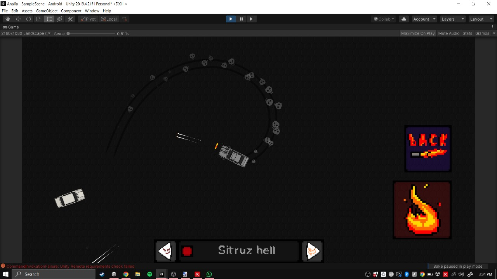
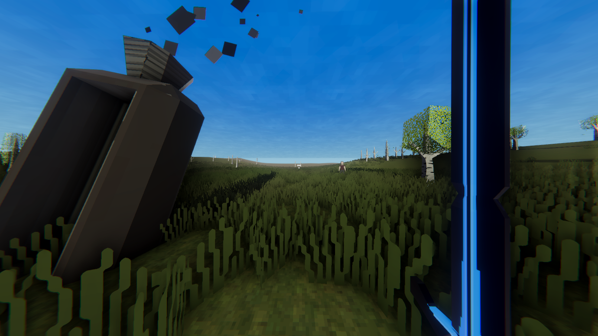

I am a game developer with experience in Unity Engine. I always look for personal achievement and improvement.
Education
Secondary School:
Northhills Bilingual School, Buenos Aires, Argentina.
Game development Course:
Juan Gabriel Gomilla's "+ 100 horas - Curso Completo Videojuegos con Unity 2018 y C#"
Languajes
Spanish
English
Russian
Proyects
These are game samples i did previously
Mobile drifting game

A mobile game about driving and shooting enemy cars. The car turns by using the cellphone gyroscope.
Sword "sci-fi" game

A level based game where you controll an "Alien", who can kill people and enemies by using its sword.
Rpg controller & scenario
An rpg game which uses the cursor as the main character's sword. It uses a script which controlls the position of your cursor (Also detecting your resolution in order to work on different displays).
Space scenario
A space scene including all planets of the solar system.
Computer Skills
Unity Engine
Broad experience, skills including programming, creating scenes and settings for the game, UI and GUI, sound, lightning setup, game design, etc ...
C#
For Unity, I also worked with .Net environments for the development of online games.
Blender
Basic skills of 3d modelling.
Virtual machines
Creating virtual machines and setting them up.
Music Prod
Creating Music and Soundtracks for games.
Pixel art
Creating simple 2d characters, environments and environment elements in game.